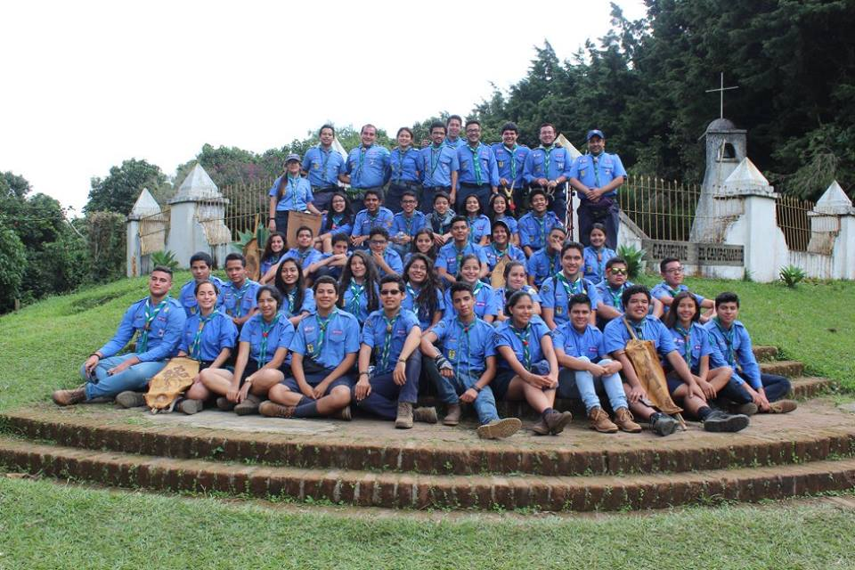

Biografía
Carmen María Yanes Benitez, nacida el 10 de octubre del año 2000 en el departamento de San Salvador, El Salvador en el seno de una familia muy amorosa. A la corta edad de 6 años comenzó a tomar clases de piano, natación y taekwondo, también practicó gimnasia olímpica y conoció su pasión por el baloncesto (el cual retomaría 8 años después). Ingresó al grupo de scouts número 7 ubicado en el Instituto Técnico Ricaldone, del cual aprendió muchas cosas acerca del Escultismo para muchachos, y conoció a personas que le cambiarían la vida. Se graduó de bachiller del Colegio Guadalupano en el año 2017 y comenzó a estudiar en la Universidad Centroamericana "José Simeón Cañas" la carrera de Ingeniería Informática en el año 2018.
